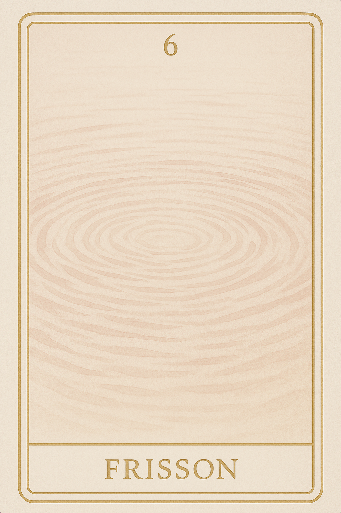
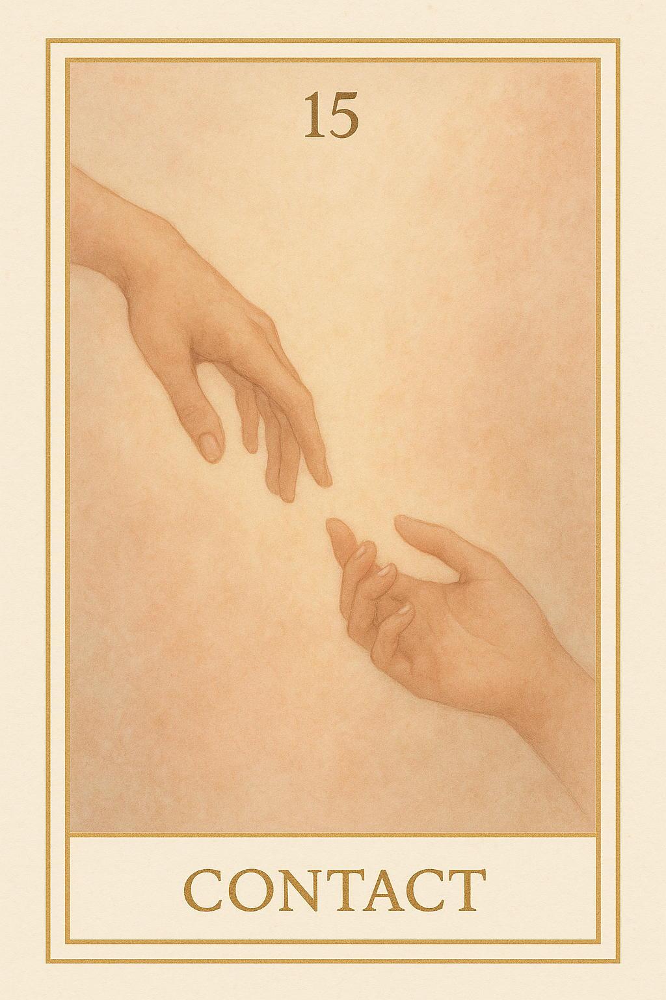
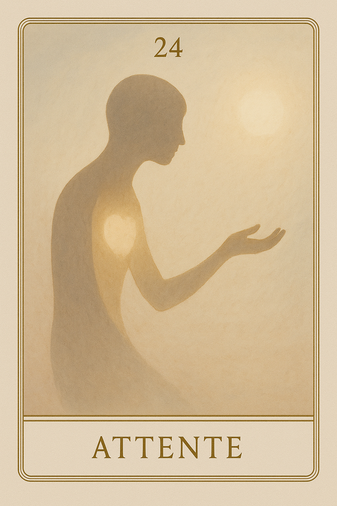
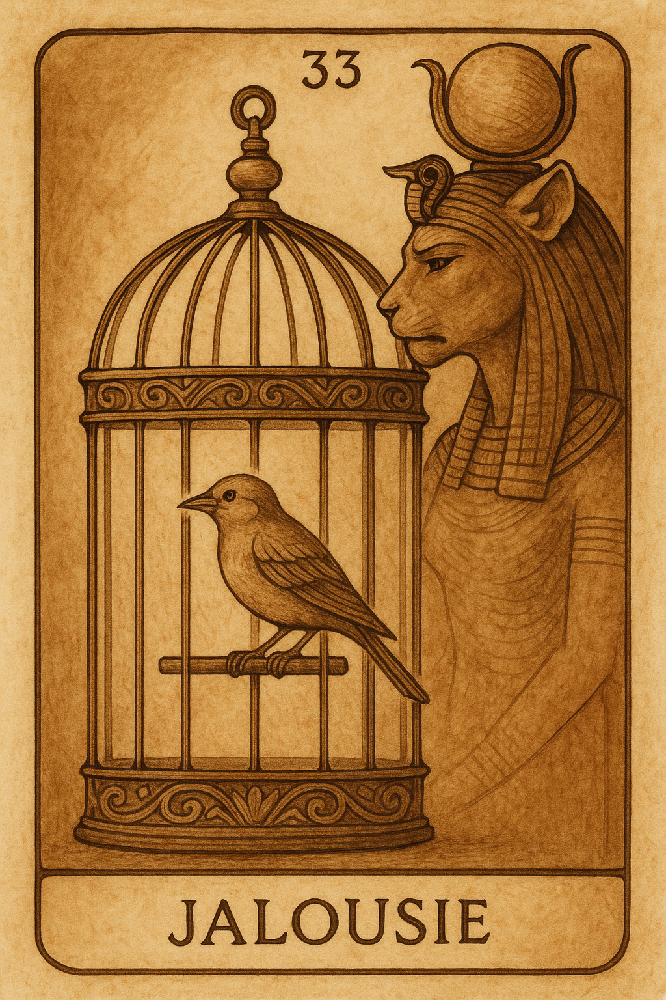
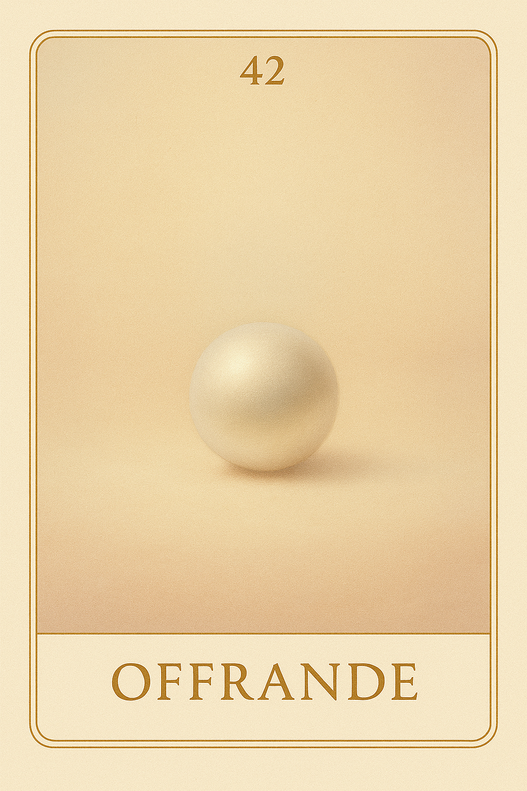
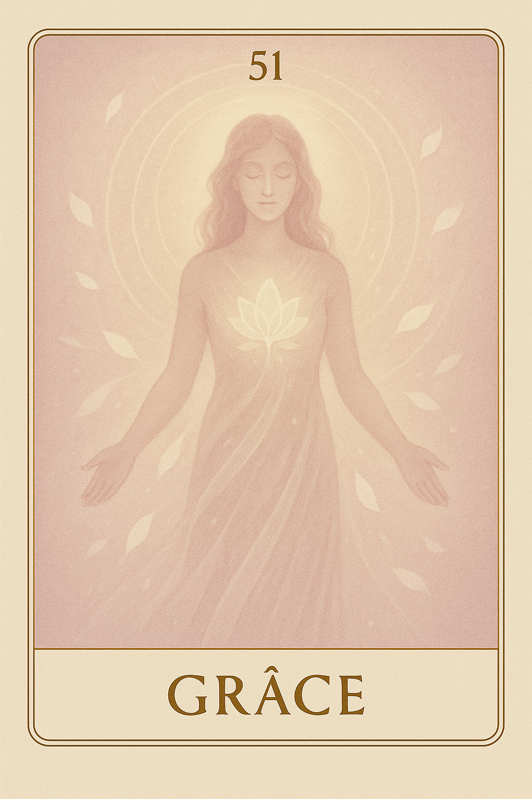
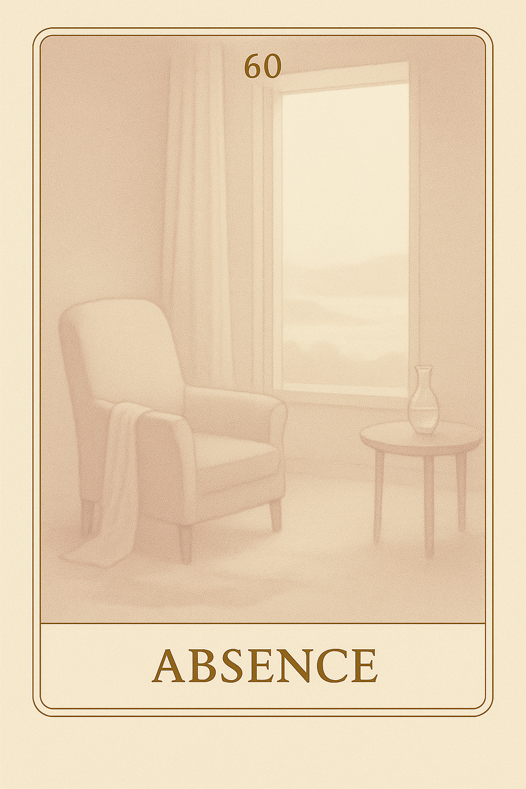
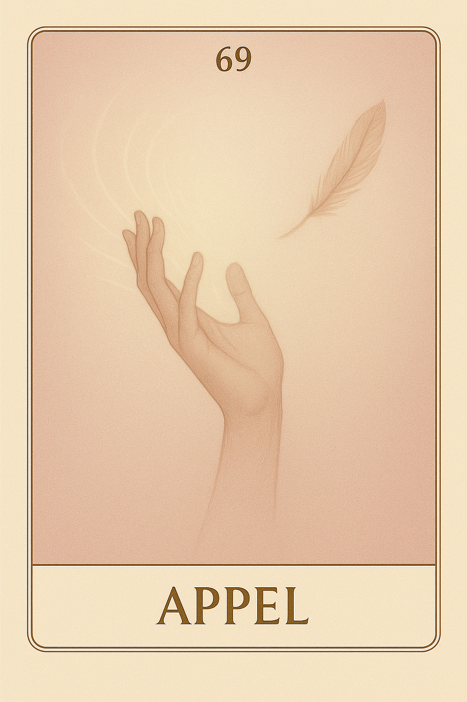
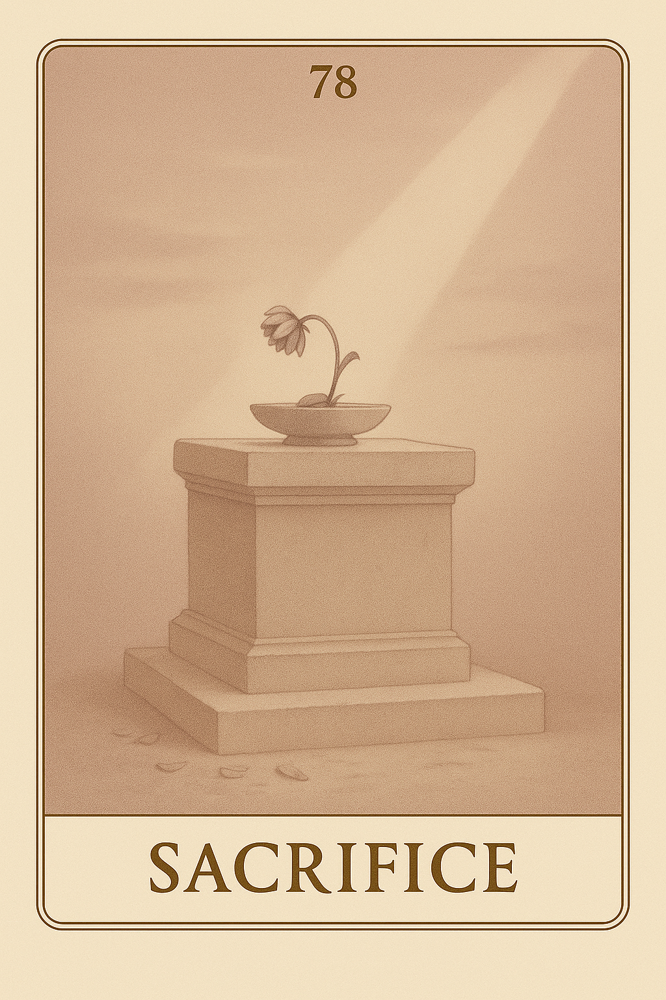

Famille 6 – Hathor (Vénus)
La Famille 6 de l’Oracle Seshat, guidée par Vénus et Hathor, explore les formes d’amour qui naissent dans l’esprit : liens invisibles, attachements profonds, fidélités silencieuses. Ici, la relation est pensée, ressentie, transmise — dans une quête d’unité, parfois douloureuse, souvent lumineuse.
Carte 6 – Frisson
Mots-clés : sensibilité émotionnelle, éveil du cœur, réceptivité subtile, premier lien affectif, vibration intérieure
Chiffre caché : 195
Lecture inversée : 5 → 9 → 1
Divinité principale : Hathor
Planète secondaire : Soleil
Divinité secondaire : Râ
Interprétation de la carte 6 : Frisson (droite)
Lecture intuitive rapide
Quelque chose en toi a vibré. Ce n’est pas encore un désir, ni une émotion claire. C’est une perception fugace — une chaleur discrète, un appel léger. Ce n’est pas toi qui choisis : c’est la vie qui te traverse, comme un courant doux, une onde sensible qui ne cherche pas encore de direction. Ce frisson-là n’est pas une promesse, ni un signal extérieur. C’est la preuve intime que tu peux ressentir, et que ce ressenti, déjà, te relie au vivant.
1. Caractère de la personne
Une sensation t’effleure. Tu ne sais pas encore si c’est de la joie, de l’appel, ou une mémoire tendre. Mais c’est là — dans ton corps, dans ton esprit, dans ton être entier. Tu ressens sans devoir comprendre.
2. Plan affectif
Tu n’es pas encore en lien, mais ta peau l’est déjà. Quelque chose touche ton cœur doucement, sans insister. L’amour de soi commence par cette acceptation : être affecté, sans perdre sa forme.
5. Plan spirituel
Ce frisson est une réponse. Pas à une question, mais à la vie. Il vient de toi et te dépasse. Il dit : tu peux recevoir.
Carte 6 : Frisson (inversée)
1. Caractère de la personne
Tu veux comprendre ce que tu ressens avant même de l’avoir laissé te traverser. Tu bloques la vague par peur d’être submergé. Mais ce que tu retiens se transforme en tension muette.
2. Plan affectif
Tu refuses de te laisser toucher. Tu as peur de la douceur, comme si elle allait t’exposer. Mais il n’y a pas encore de lien ici — juste une permission d’être sensible.
5. Plan spirituel
Tu crois que l’ouverture te fragilise. Mais ta réceptivité est une force, si tu l’écoutes sans défense, sans urgence à définir ce qu’elle signifie.
Résumé de la carte 6 : Frisson
Frisson est la première vibration du cœur. Il ne construit rien encore, il ne lie rien — il signale juste que tu es sensible, et que cette sensibilité est déjà une forme d’amour.
Carte 15 – Contact
Mots-clés : : premier lien émotionnel, naissance du lien, sensibilité partagée, présence affective, ressenti corporel subtil
Chiffre caché : 222
Lecture inversée : 2 → 2 → 2
Divinité principale : Hathor
Planète secondaire : Terre
Divinité secondaire : Geb
Interprétation de la carte 15 : Contact (droite)
Lecture intuitive rapide
Quelque chose touche. Ce n’est pas une idée, ni même une émotion claire — c’est une présence. Tu ressens l’autre, et cela s’ancre dans ton corps. Ce n’est plus un frisson intérieur : c’est un début de relation, encore sans mot, mais déjà réel. Tu es atteint. Et tu acceptes de l’être. Le monde extérieur commence à te traverser.
1. Caractère de la personne
Un lien naît. Tu ressens une chaleur, une vibration, une présence. Ce n’est pas encore une relation définie, mais ton corps sait que quelque chose commence.
2. Plan affectif
Tu es touché. Peut-être par un geste, un regard, une présence silencieuse. Il ne s’agit pas encore d’aimer, mais d’accueillir ce qui résonne.
5. Plan spirituel
Tu commences à sentir l’autre à travers toi. L’amour ne s’élève pas encore : il descend, s’ancre, se pose dans la matière du cœur.
Carte 15 : Contact (inversée)
1. Caractère de la personne
Tu ressens quelque chose, mais tu refuses de le laisser entrer. Par peur d’être envahi, ou parce que ce lien n’a pas encore de nom.
2. Plan affectif
Tu fermes la porte à un élan naissant. Pourtant, c’est dans ces premiers contacts qu’un sentiment peut grandir sans effort.
5. Plan spirituel
Tu veux comprendre ce que tu ressens avant de le vivre. Mais l’amour ne commence pas par le sens : il commence par le corps.
Résumé de la carte 15 : Contact
Contact est la carte de la sensation incarnée du lien. Ce n’est pas encore un amour, ni une relation : c’est le premier frémissement réel entre toi et un autre. Une présence t’atteint, et tu l’acceptes. Elle dit : “Laisse-toi toucher. Tu n’as pas à comprendre ce qui commence.”
Carte 24 – Attente
Mots-clés : : amour conditionnel, attente affective, besoin de reconnaissance, don et frustration, faille relationnelle
Chiffre caché : 186
Lecture inversée : 6 → 8 → 1
Divinité principale : Hathor
Planète secondaire : Jupiter
Divinité secondaire : Amon-Rê
Interprétation de la carte 24 : Attente (droite)
Lecture intuitive rapide
Tu crois aimer. Et peut-être aimes-tu vraiment. Mais ce que tu ressens, est tissé d’un vide ancien, d’un besoin de retour, d’une soif de reconnaissance. Tu tends la main, tu offres, tu accompagnes — mais au fond, tu attends. Tu attends qu’on te voie. Qu’on t’aime comme tu aurais voulu l’être. Ton amour est sincère. Mais il est conditionné. Et tant qu’il cherche à remplir, il ne peut pas circuler librement.
1. Caractère de la personne
Tu donnes, tu offres, tu es là. Mais ce n’est pas sans arrière-plan. Tu espères quelque chose. Une reconnaissance, un geste, une réciprocité. Et quand cela ne vient pas, tu doutes de toi.
2. Plan affectif
Tu veux aimer, mais surtout être aimé. Et c’est normal. Mais ici, ton amour cherche à combler quelque chose de plus ancien. Une faille, un vide, une absence. Tu crois aimer, mais tu attends plus que tu ne reçois.
5. Plan spirituel
Tu te crois dans l’ouverture, mais tu cherches la validation. Tu attends que l’autre te renvoie une image de toi aimable. Ce n’est pas une erreur : c’est un seuil. Reconnais ce que tu espères vraiment, et ton amour changera de nature.
Carte 24 : Attente (inversée)
1. Caractère de la personne
Tu es déçu. Tu crois donner, mais tu ne reçois pas comme tu voudrais. Cela crée une forme de retrait, d’agacement muet. Tu ne vois pas que ton attente colore tout ce que tu appelles amour.
2. Plan affectif
Tu crois que l’autre ne t’aime pas assez. Mais tu lui as peut-être demandé de remplir un rôle qui ne lui appartient pas. Tu confonds la relation avec une réparation. Reviens à toi.
5. Plan spirituel
Tu veux aimer grand, aimer vrai. Mais tu es en demande. Et cette demande freine le feu. Ce que tu offres cherche un retour. C’est là que ton lien se fragilise. Retrouve l’axe de ton propre don.
Résumé de la carte 24 : Attente
Attente est la carte d’un amour sincère, mais chargé d’un besoin caché. Elle ne parle pas de manipulation, mais de blessure non vue. Elle dit : “Tu donnes, mais tu attends. Et c’est cette attente, non dite, qui t’empêche de recevoir vraiment.”
Carte 33 – Jalousie
Mots-clés : : jalousie en amour, peur de perdre l’autre, lien possessif, attachement blessé, relation étouffante
Chiffre caché : 204
Lecture inversée : 4 → 0 → 2
Divinité principale : Hathor
Planète secondaire : Mars
Divinité secondaire : Sekhmet
Interprétation de la carte 33 : Jalousie (droite)
Lecture intuitive rapide
Tu dis que tu aimes. Mais ce que tu ressens, c’est la peur. Peur de perdre, peur de ne pas suffire, peur que l’autre regarde ailleurs. Et cette peur devient feu. Un feu qui consume ce qu’il voulait protéger. Tu t’accroches au lien, tu le serres trop fort. Mais l’amour ne se tient pas en laisse. Il meurt dans la contrainte.
1. Caractère de la personne
Tu reconnais ce qui brûle en toi. Tu veux garder l’autre, ne pas être remplacé, ne pas être oublié. Tu nommes enfin ce que tu ressens : ce n’est pas de l’amour, c’est de la peur.
2. Plan affectif
Tu es pris dans une relation où tu attends trop, où tu resserres les liens pour ne pas perdre. Tu le sais : l’amour ne circule plus. Tu veux garder ce qui n’est déjà plus libre.
5. Plan spirituel
Tu prends conscience de ton attachement blessé. Tu vois l’enfant en toi qui veut être rassuré. Tu ne combats plus ce feu : tu l’écoutes, tu le reconnais, tu apprends à l’apaiser.
Carte 33 : Jalousie (inversée)
1. Caractère de la personne
Tu nies ce que tu ressens. Tu refuses de voir la jalousie en toi, alors tu accuses, tu contrôles, tu compares. Tu crois que c’est l’autre le problème, mais c’est ton feu non reconnu.
2. Plan affectif
Tu subis la jalousie de l’autre. Tu es enfermé dans une relation où l’amour est devenu emprise. Tu n’as plus d’espace. Ce n’est plus du lien, c’est une cage.
5. Plan spirituel
Tu laisses une énergie toxique t’habiter ou t’envahir. Tu ne poses pas de limites. Tu confonds présence et possession. Et ton cœur se referme au lieu de s’ouvrir.
Résumé de la carte 33 : Jalousie
Jalousie est la carte de l’amour brûlé par la peur. Elle montre le moment où l’attachement devient douleur, où l’amour devient prison. Elle dit : “Ce que tu veux garder t’échappe. Ce que tu refuses de voir te possède. L’amour ne supporte ni le mensonge, ni la contrainte.”
Carte 42 – Offrande
Mots-clés : : don sincère, amour sans retour, blessure du non-retour, geste gratuit en amour, offrande relationnelle
Chiffre caché : 213
Lecture inversée : 3 → 1 → 2
Divinité principale : Hathor
Planète secondaire : Mercure
Divinité secondaire : Thot
Interprétation de la carte 42 : Offrande (droite)
Lecture intuitive rapide
Tu donnes. Par amour, par vérité, par besoin aussi. Tu tends la main. Tu poses ton cœur. Tu veux que ce soit reçu. Et peut-être… que ce soit rendu. Mais ce que tu offres ne t’appartient plus. Et ce que tu espères… peut ne pas revenir. Alors tu te blesses. Tu doutes. Tu retires. Mais ce que tu as donné avec sincérité, même sans retour, te révèle.
1. Caractère de la personne
Tu donnes. Non pour plaire, mais parce que tu es prêt à ouvrir. Ce geste te transforme. Même sans retour, il te relie à toi.
2. Plan affectif
Tu tends la main. Tu poses ton cœur. Tu ne sais pas si l’autre le verra. Mais le geste est vrai. Et c’est ça, la valeur du lien.
5. Plan spirituel
Tu fais un pas sans garantie. Tu offres ce qui est vivant, fragile, pur. Et même si personne ne répond, tu as parlé juste.
Carte 42 : Offrande (inversée)
1. Caractère de la personne
Tu crois donner, mais tu attends qu’on te rende. Tu offres, mais tu comptes. Tu tends, mais tu surveilles. Et tu te blesses à ton propre geste.
2. Plan affectif
Tu dis “je t’aime” pour entendre “moi aussi”. Mais ce n’est pas une offrande : c’est un contrat secret. Et le silence te fait mal.
5. Plan spirituel
Tu confonds foi et attente. Tu veux que l’univers te rende. Mais ce que tu donnes avec les yeux tournés vers le retour, ne circule pas.
Résumé de la carte 42 : Offrande
Offrande est la carte du don sincère, mais aussi de la blessure du retour espéré. Elle t’invite à offrir sans attacher, à aimer sans condition de retour, non pas pour t’oublier, mais pour t’honorer dans ce que tu offres. Elle dit : “Ce que tu donnes pour vrai ne dépend pas de ce qu’on t’en rend. Il éclaire déjà ce que tu es.”
Carte 51 – Grâce
Mots-clés : : acceptation de soi, amour inconditionnel, paix intérieure, grâce intérieure, tendresse envers soi
Chiffre caché : 168
Lecture inversée : 8 → 6 → 1
Divinité principale : Hathor
Planète secondaire : Vénus
Divinité secondaire : Hathor
Interprétation de la carte 51 : Grâce (droite)
Lecture intuitive rapide
Tu as donné. Tu as attendu. Tu as cru devoir mériter. Et tu t’es souvent jugé : trop sensible, trop intense, trop changeant. Mais l’amour ne se mérite pas. La paix ne se négocie pas. Il y a un état où tout se calme — parce que tu cesses de lutter. Cet état, c’est la grâce. Et elle commence quand tu t’accordes à toi-même.
1. Caractère de la personne
Tu cesses de te justifier. Tu cesses de te corriger. Tu t’acceptes — pas dans l’idéal, mais dans la vérité. Et cette paix rayonne. Sans bruit.
2. Plan affectif
Tu ne forces plus rien. Tu ne retiens plus rien. Tu laisses l’amour circuler — sans peur, sans condition. Et c’est là que le lien devient juste.
5. Plan spirituel
Tu ne cherches plus la lumière. Tu t’ouvres à ce qui est là. Et cette ouverture silencieuse devient ton axe.
Carte 51 : Grâce (inversée)
1. Caractère de la personne
Tu crois devoir corriger ce que tu es pour mériter l’amour. Mais ce combat t’épuise. Et il ne te mène nulle part.
2. Plan affectif
Tu donnes beaucoup, ou tu retiens tout. Mais dans les deux cas, c’est la peur qui agit. Pas la tendresse.
5. Plan spirituel
Tu veux être aimé pour ce que tu es… Mais tu n’es pas encore prêt à te voir avec douceur. C’est cela, pourtant, qui ouvrirait le passage.
Résumé de la carte 51 : Grâce
Grâce est la carte de l’apaisement affectif profond. Pas un apaisement gagné, ni contrôlé — mais une acceptation silencieuse de soi, telle que l’on est. Elle dit que tu n’as pas à briller, ni à mériter, ni à attendre. Tu as à t’accorder intérieurement, avec tendresse. Elle dit : “Tu n’as rien à faire pour être digne d’amour. Tu as juste à laisser tomber l’idée que tu ne l’es pas.”
Carte 60 – Absence
Mots-clés : : vide émotionnel, lien absent, manque d’intensité affective, amour sans réciprocité, absence intérieure
Chiffre caché : 240
Lecture inversée : 0 → 4 → 2
Divinité principale : Terre
Planète secondaire : Saturne
Divinité secondaire : Osiris
Interprétation de la carte 60 : Absence (droite)
Lecture intuitive rapide
Tu veux aimer — mais quelque chose échappe. L’autre est là, ou peut-être pas, mais ce n’est pas ça. Tu offres, tu tends la main, tu te tiens là, mais tu ne sens rien. Ou si peu. Ce n’est pas un rejet. Ce n’est pas un manque d’amour. C’est un silence, un vide, un écart que rien ne comble. Et peut-être… qu’il n’y a rien à combler. Juste à reconnaître : l’absence, quand elle parle, dit aussi ce qui est vrai.
1. Caractère de la personne
Tu es là, mais tu ne te sens pas vraiment présent. Quelque chose reste en arrière. Tu avances dans la relation, mais ton cœur ne suit pas toujours. Il attend un signe… de toi-même.
2. Plan affectif
Tu veux ressentir, tu veux vibrer. Mais le lien ne touche pas. Peut-être parce qu’il n’y a rien à ressentir. Ou peut-être parce que tu n’es pas encore là, tout entier.
5. Plan spirituel
L’absence n’est pas une faille. C’est une vérité nue. Elle ne juge pas. Elle montre juste ce qui ne résonne pas encore. Et c’est un début — si tu l’écoutes.
Carte 60 : Absence (inversée)
1. Caractère de la personne
Tu fais comme si tout allait bien. Mais ton cœur n’est pas là. Et plus tu refuses de voir cette absence, plus elle te gouverne. Tu ne peux pas aimer à moitié — pas sans te perdre.
2. Plan affectif
Tu cherches à plaire, à donner, à maintenir le lien. Mais quelque chose sonne faux. Le lien est peut-être réel — mais pas vivant.
5. Plan spirituel
Tu veux que l’amour comble. Mais il ne comble rien. Il éclaire, il révèle — même le vide. Ne cherche pas à remplir : reconnais.
Résumé de la carte 60 : Absence
Absence parle d’un amour où quelque chose manque — mais sans trahison, sans drame. C’est une présence vide, une tendresse sans vibration. Et cette dissonance, si elle est vue, devient vérité. Elle t’invite à te reconnaître, même dans ce que tu ne ressens pas. Elle dit : “Tu n’as pas à forcer le lien. Tu as à écouter ce qu’il ne dit pas.”
Carte 69 – Appel
Mots-clés : : besoin d’amour, appel intérieur, relation déséquilibrée, attente affective, quête de lien
Chiffre caché : 231
Lecture inversée : 1 → 3 → 2
Divinité principale : Hathor
Planète secondaire : Uranus
Divinité secondaire : Maât
Interprétation de la carte 69 : Appel (droite)
Lecture intuitive rapide
Tu veux aimer. Tu veux être aimé. Mais ce que tu exprimes ne trouve pas toujours de réponse. Tu donnes, tu tends la main, tu offres ton cœur… mais quelque chose ne revient pas. Et tu ne sais plus si c’est toi qui donnes trop — ou l’autre qui ne sait pas recevoir. Peut-être que ce que tu offres est un appel, pas encore un lien. Et que cet appel vient d’un vide que tu portes.
1. Caractère de la personne
Tu ressens un besoin fort de lien, de résonance. Tu parles, tu proposes, tu offres. Mais parfois, c’est ton besoin qui parle — plus que ta présence.
2. Plan affectif
Tu veux être en lien, mais tu appelles trop fort. Et cet appel, s’il n’est pas entendu, devient douleur. Peut-être que le silence de l’autre est juste un miroir de ton propre flou.
5. Plan spirituel
L’appel est sacré. Il dit que tu es prêt. Mais ce n’est pas l’autre qui doit combler — c’est toi qui dois te rejoindre. Alors l’amour devient juste.
Carte 69 : Appel (inversée)
1. Caractère de la personne
Tu dis vouloir aimer — mais c’est le vide que tu veux combler. Et plus tu appelles, plus tu t’éloignes. L’alignement ne vient pas de l’extérieur.
2. Plan affectif
Tu veux de l’amour. Mais tu ne sais pas encore ce que tu demandes vraiment. Et tant que tu ne t’entends pas, l’autre ne pourra pas te répondre.
5. Plan spirituel
Tu attends une réponse divine, une présence, un écho. Mais l’appel part de ton manque, pas de ton centre. Et Maât ne répond qu’à ce qui vibre juste.
Résumé de la carte 69 : Appel
Appel est la carte du désir d’amour exprimé, parfois avec force, parfois avec confusion. Elle ne juge pas. Mais elle invite à écouter l’origine de ce cri : vient-il d’un plein, ou d’un vide ? Elle dit : “Tu veux être entendu. Mais avant que l’autre réponde, écoute d’où vient ta voix. Car le vrai lien commence là où l’appel se transforme en présence.”
Carte 78 – Sacrifice
Mots-clés : : sacrifice conscient, retour à soi, amour lucide, lâcher-prise affectif, fin d’une illusion relationnelle
Chiffre caché : 177
Lecture inversée : 7 → 7 → 1
Divinité principale : Hathor
Planète secondaire : Planète inconnue
Divinité secondaire : Sia
Interprétation de la carte 78 : Sacrifice (droite)
Lecture intuitive rapide
Tu as aimé. Tu t’es donné. Tu as espéré aussi, parfois trop. Et dans cet élan, tu t’es oublié — ou tu t’es brûlé. Mais aujourd’hui, ce n’est plus de l’abandon : c’est une offrande lucide. Tu ne renonces pas à toi — tu renonces à vouloir être aimé au prix de ta vérité. C’est cela, le vrai sacrifice : lâcher ce que tu croyais nécessaire pour laisser advenir ce qui est juste. Et dans cet acte, tu redeviens entier.
1. Caractère de la personne
Tu abandonnes un rôle, une posture, une attente. Ce n’est pas une perte : c’est un retour à toi-même, délesté de ce qui n’était pas toi.
2. Plan affectif
Tu ne mendies plus l’amour. Tu offres ce que tu es, sans chercher de retour. Et c’est là, dans cette clarté nue, que l’amour peut circuler.
5. Plan spirituel
Tu laisses tomber une forme d’attachement spirituel, de quête affective cachée. Tu reviens à un amour incarné, lucide, souverain.
Carte 78 : SAcrifice (inversée)
1. Caractère de la personne
Tu continues à t’accrocher à une image aimable de toi. Mais cet attachement t’écarte de ton axe. Tu n’as rien à prouver.
2. Plan affectif
Tu donnes encore dans l’espoir d’être aimé. Mais ce don est chargé d’attente. Et l’amour véritable ne passe pas par le chantage affectif.
5. Plan spirituel
Tu crois que l’amour est abandon de soi. Mais ce qui est demandé ici, c’est de rester dans l’axe, même seul. Et dans cette posture, tu deviens pleinement aimant.
Résumé de la carte 78 : Sacrifice
Sacrifice est la carte de l’amour lucide, de l’abandon des illusions affectives, et du retour à soi comme seul lieu d’offrande vraie. Elle ne parle pas de perte. Elle parle d’un choix aligné, exigeant, où tu cesses de donner pour être vu, et commences à être… en donnant. Elle dit : “Le sacrifice n’est pas souffrance. C’est le moment où tu renonces à tout… sauf à l’amour juste.”